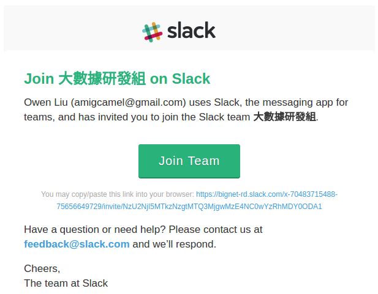
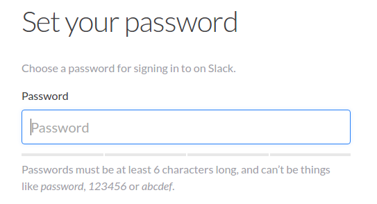
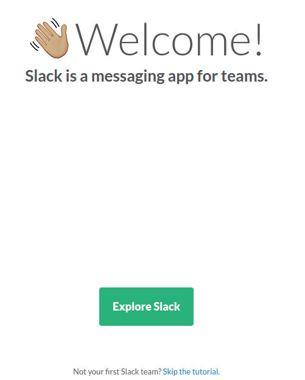
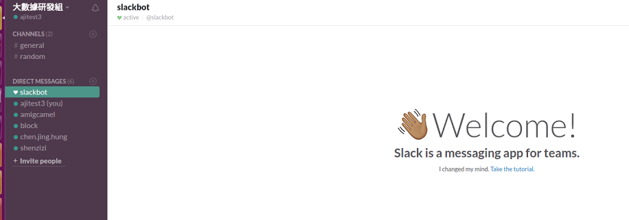

企業級整合溝通工具
分享者 阿吉
Slack是什麼？能吃嗎？
即時通訊軟體
用
 臭了嗎？
臭了嗎？
 臭了嗎？
臭了嗎？
沒臭，只是...
已讀不回？
公私不分？
任務追蹤？
電腦玩物
我們真要用 LINE 談論公事嗎？小心即時反害了工作效率
跨平台


跨瀏覽器

Slcak 對團隊的幫助
資訊公開透明
主動取得資訊
消極/積極的約束力
組織扁平化
一起加入Slack吧！
你會收到一封 email
設定密碼
成功！
登入
功能介紹
多種文字格式
方便閱讀~刪除線~ 巨網
*粗體* 巨網
_斜體_ 巨網
編輯訊息
說話不用三思而後行（誤Pin
強大搜尋功能
標記訊息
自動高亮
多媒體支援
不用再另開分頁惹
自動回應機器人
可以不要再問一樣的問題了嗎？色碼速查
設計師的好朋友#4679BD
#5A6667
#8CD0BC
/GIPHY
好GIF，不用嗎？
Webhook
讓機器人告訴大家你很認真總結
核心
訊息分流
功能特色
其他選擇

相關資料
THANK YOU
你的看法是...
-
你在用LINE討論公事時有遇到什麼困難過嗎？
請回答 -
你是不是也快被LINE逼瘋了呢？
請回答